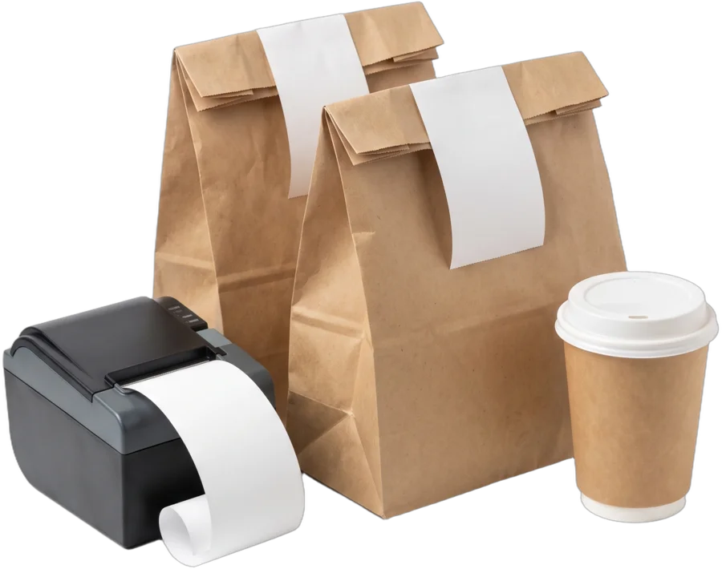
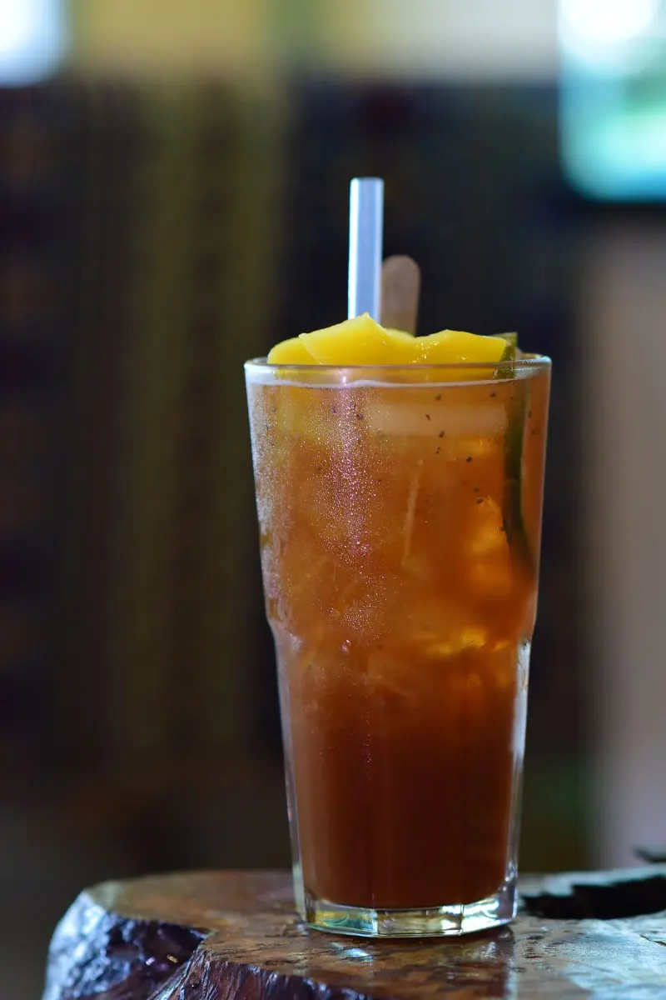

Sate Ayam
3,50 JODTusuk sate ayam bumbu khas
Stok 50
WARUNG SATE PAK ALI
Toko buka
Tusuk sate ayam bumbu khas

Sate kambing empuk dan lezat

Nasi goreng telur setengah matang

Mie goreng dengan sayuran segar

Es teh manis segar

Air mineral dingin
24 menu · semua stok